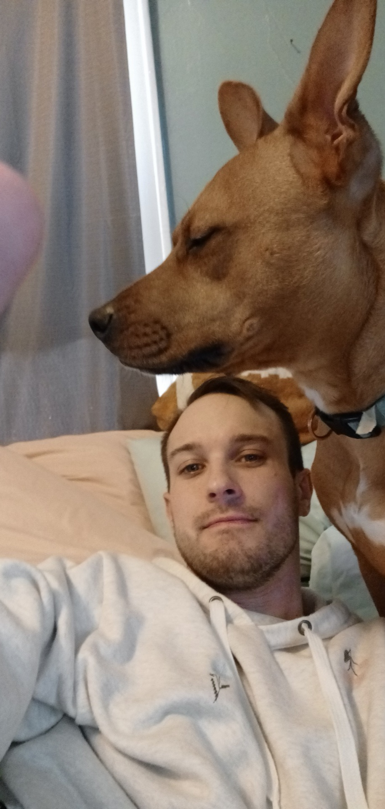

Samuel Furnish

Web Developer
Professional Summary
I currently work part time as a freelance web developer and full
time in the field of healthcare management. I
am gifted with
the familiarity of a variety of web development technologies,
as well as proficiency in their use.
My goal is to utilize my
skillset to generate quality web sites which empower my clients to
further their vision
and expand their connectivity.
Education
- University of Texas, Cockrell School of Engineering
Work Experience
- Octapaharma Plasma
2021-Current
- Assistant Manager
- Financial Reporting
- KPI Reporting
- Health Department Reporting
- Budget Management
- Inventory Management
- Audit Preparation
- Staff Development
- Scheduling
- Recruiting
- Donor Counseling
- Machine Repair Technician
- Grassroots Marketing
- CSL Plasma
2020-2021
- Phlebotomist
- Venipuncture
- Apheresis Machine Competence
- Medical Screener
- Samsung Austin Research and Development Center
2015
Skills
Other
Hobbies